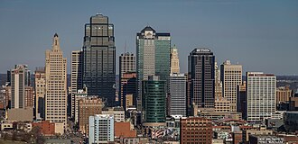

Missouri's second-largest city, Kansas City, has survived the same decay that has plagued similar cities such as St. Louis or Detroit. Kansas City has done this with a two-fold plan: first, they have annexed unincorporated and underdeveloped areas at the city's borders. Second, they have spent billions to redevelop the downtown to attract residential, convention, tourist, and office workers.
| Label | Detail |
|---|---|
| Metro Population | 2.2 Million |
| Incorporation Year | 1850 |
| Region | West Missouri |
| Classification | Urban |
| Average Income | Above state average. $40.4k per year compared to 37.2k |